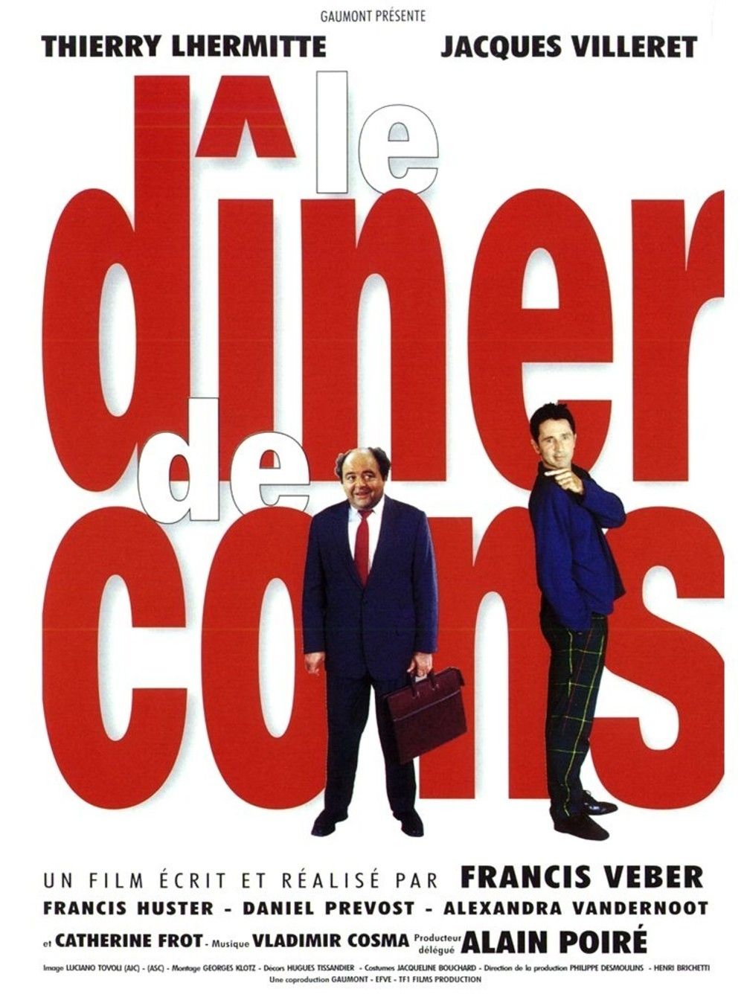

| Title | Plot | Genre | Release date | Cover | Details |
|---|---|---|---|---|---|
| Changeling | Los Angeles, 1928. A single mother returns from work to find her nine-year-old son gone. She calls the LAPD to initiate a search. Five months later, a boy is found in Illinois who fits the description; he says he's her son. To fanfare and photos, the LAPD reunite mother and son, but she insists he's not her boy. The cops dismiss her as either a liar or hysterical. When she joins a minister in his public criticism of the police, they in turn use government power to silence and intimidate her. Meanwhile, a cop goes to a dilapidated ranch to find a Canadian lad who's without legal status; the youth tells a grisly tale. There's redress for murder; is there redress for abuse of power? |
biography | October 24, 2008 | Changeling IMBD | |
| The Awakening | In 1921, England is overwhelmed by the loss and grief of World War I. Hoax exposer Florence Cathcart visits a boarding school to explain sightings of a child ghost. Everything she believes unravels as the 'missing' begin to show themselves. |
horror | November 11, 2011 | The Awakening IMBD | |
| Deadpool | This is the origin story of former Special Forces operative turned mercenary Wade Wilson, who after being subjected to a rogue experiment that leaves him with accelerated healing powers, adopts the alter ego Deadpool. Armed with his new abilities and a dark, twisted sense of humor, Deadpool hunts down the man who nearly destroyed his life. |
action | February 8, 2016 |

|
Deadpool IMBD |
| Le Diner de Cons | Each week, Pierre and his friends organize what is called as "un dîner de cons". Everyone brings the dumbest guy he could find as a guest. Pierre thinks his champ -François Pignon- will steal the show. |
comedy | April 15, 1998 |  | Le Diner de Cons IMBD |
| White Chicks | After an unsuccessful mission, FBI agents Kevin Copeland and Marcus Copeland fall in disgrace in the agency. They decide to swap their bad position with his superior Section Chief Elliott Gordon working undercover in an abduction case, disguised in the two spoiled white daughters of a tycoon, Brittany and Tiffany Wilson, getting in hilarious situations. |
comedy | June 23, 2004 | White Chicks IMBD |